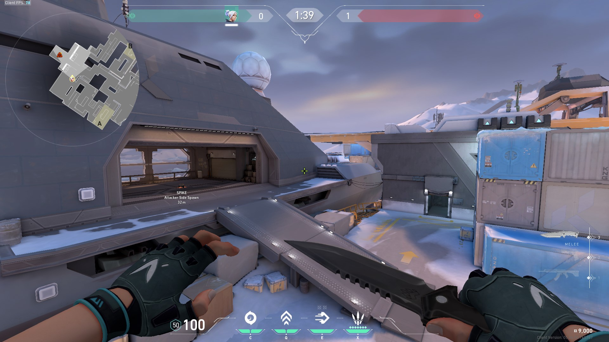

Icebox

The attacker side spawn features a small and armed modern cargo ship, while the defender side spawn exhibits a research facility area. The whole Icebox map is surrounded by high snowy mountain ranges, frozen up oceans, and a watchtower, observing the landscape. There are many shipping containers and radianite boxes scattered around the map. Some of the best agents to use in this map are Omen, Killjoy, Jett, Sova, and Raze.
On lore, Icebox is an abandoned port and research facility found in Russia near the North Arctic and Siberia’s frozen sea. An ancient Japanese ship crashed here and a secret facility of Kingdom Corporation was established to uncover radianite, and other resources. This facility also exhibits different samurai suits, and a mask in A site, before Yoru, the rift walker, teleported into this facility through a rift and stole the mask. This mask allows the wearer to see between dimensions and makes the wearer unaffected or seen by enemies outside.